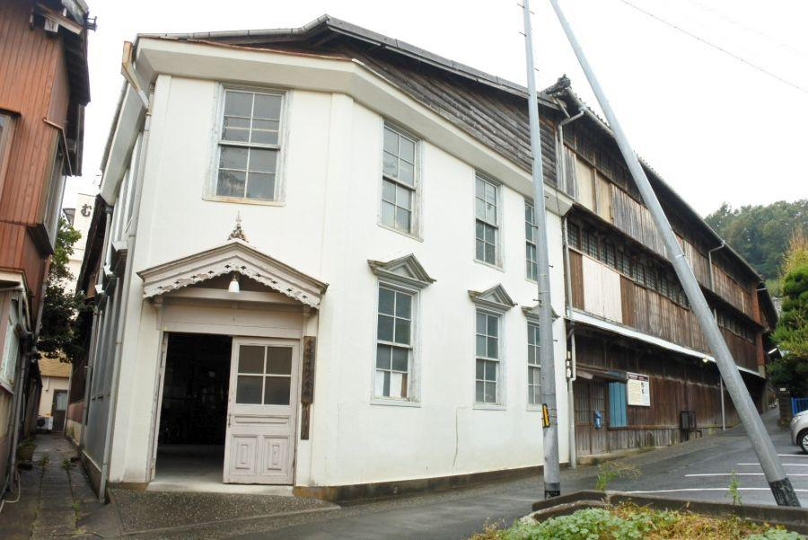
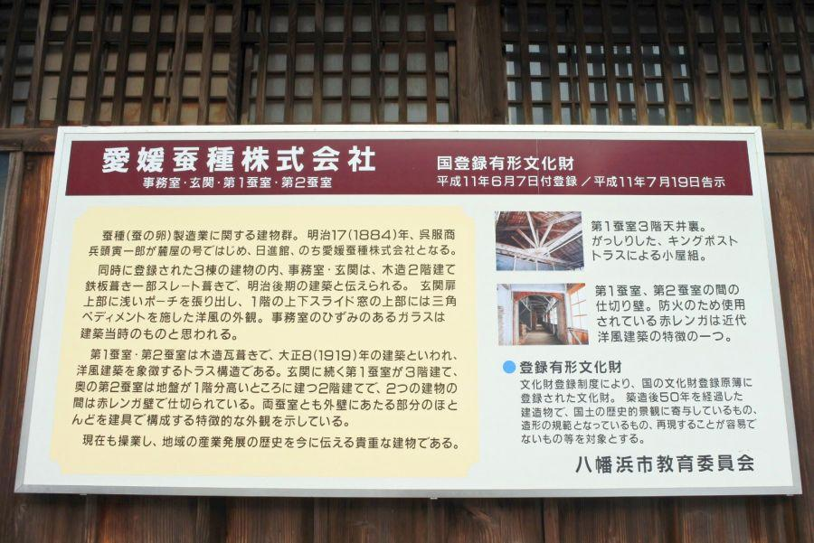
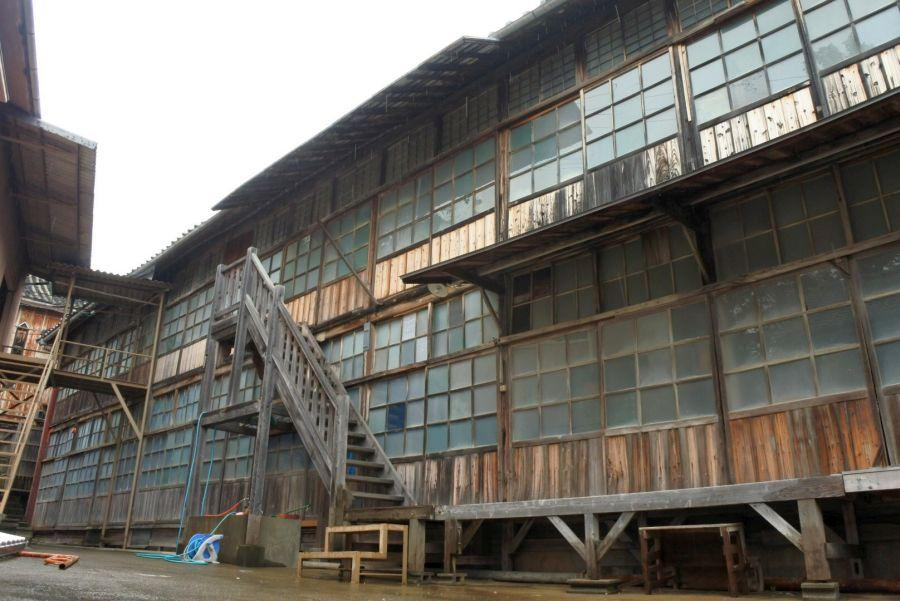
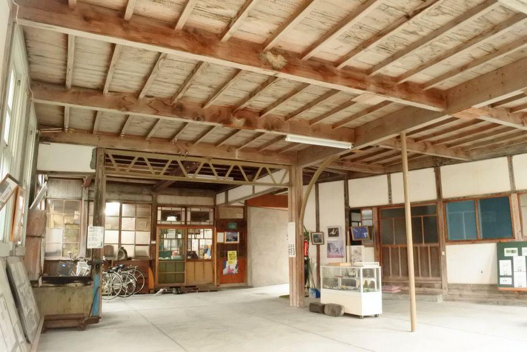
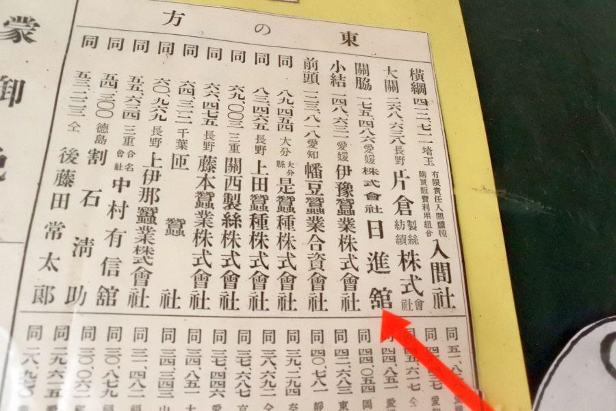
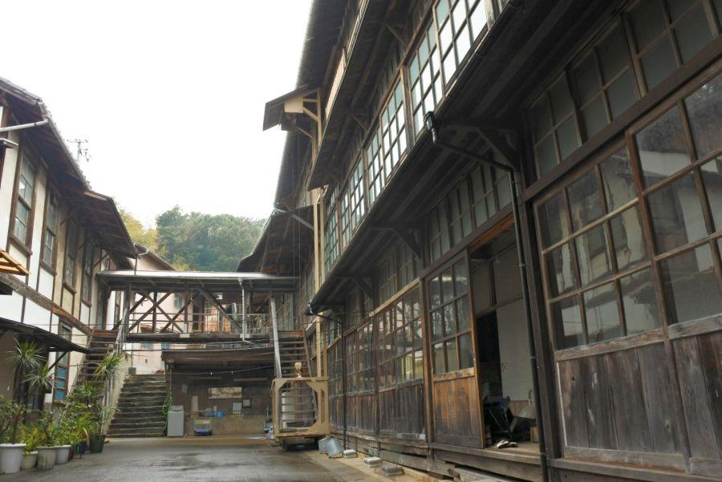
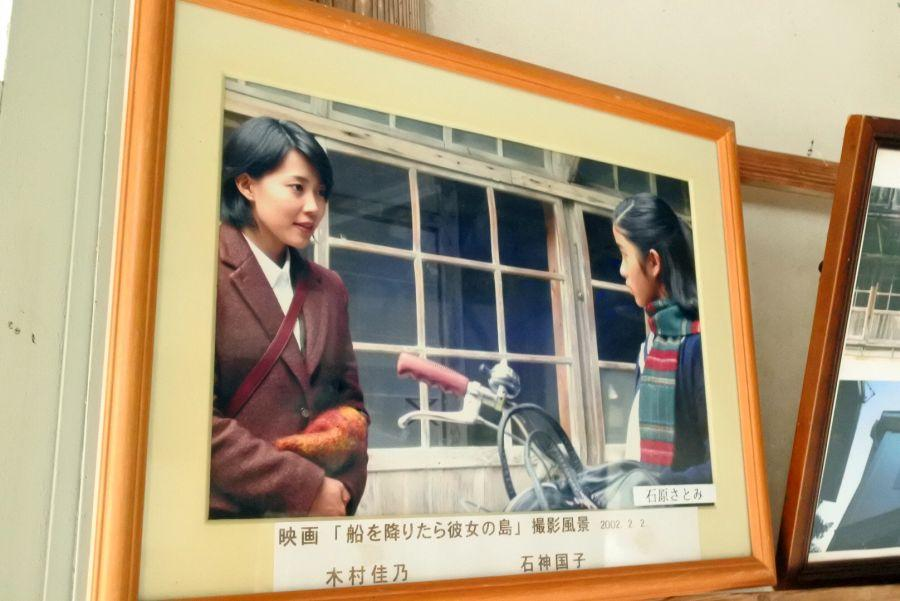

文明開化期にタイムスリップ！ 日本を支えた蚕業 < 愛媛蚕種 / 愛媛県 >

玄関は洋、奥屋は和。
幾度かの改築を経て和洋折衷の造りとなった こちらの建物は、明治維新後の日本を 短期間で列強国の一国に数えられるまでに成長させることに大きく寄与した、生糸産業に関わる施設です。
"蚕種" というお仕事

愛媛蚕種(えひめさんしゅ / 愛媛県八幡浜市保内町川之石)
八幡浜(やわたはま)は、九州を望む宇和海に良港を擁し 「四国のマンチェスター」 と呼ばれたように、四国では最も早い時期にガス灯が灯り、同地域の近代化を牽引した港町。
元々は呉服商を営む人物によって始められた蚕種製造業は 時代のニーズを受けて大きく発展。養蚕業、製糸・紡績業を行う上で欠かせない存在となった。
蚕種製造(蚕の卵を製造)
↓
養蚕(桑の葉を与えて繭を取る)
↓
製糸(繭から絹糸を得て、その糸を紡ぐ)
↓
着物製造など
懸命に働くことで 日に日に生活が向上していく実感を得ることができるようになった明治時代。
養蚕は 収入が不安定な農家にとっては貴重な収入源。
国にとって生糸は 外貨を獲得する有効な手段として。
養蚕業は官民一体となって成長していきました。
皆が同じ目標に向かって努力していた時代。貧しいけれど一体感のある 良き時代であったことでしょう。
文明開化を感じさせるレトロな建物

国の登録有形文化財に指定されているこちらの建物群。
歴史を感じさせる外観だが、内観も秀逸。木枠の引き戸に薄いすりガラス。昔の木造校舎みたいです。
耐震強度の問題で 木造校舎はすっかり見られなくなりましたが、愛媛蚕種さんは現役稼働中。
入口側は三階建てだが、奥は二階建て。斜面を上手く利用した立地になっている。
※ 許可を受けて内観しています

玄関入ってすぐ、コンクリート建物部分は事務所(奥)と展示室。

事業の規模を現わす番付表が設置されていました。
長野や群馬と言うと 養蚕業の本場のイメージがありますが、愛媛県も内陸部が広い南予を中心に蚕種製造が盛んだったことが、番付表を見るとわかります。
いつまでもこの佇まいで...

ここだけ切り取ると タイムスリップしたような感覚に陥ります。

レトロな雰囲気は、蚕種製造だけでなく 映画・ドラマのロケ地としても活用されています。
愛媛蚕種
< 自家用車 >
高松駅から 約3時間、219km
高松空港から 約1時間20分、59km
※ 主な地点からの最速・最短距離